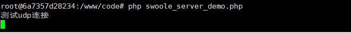
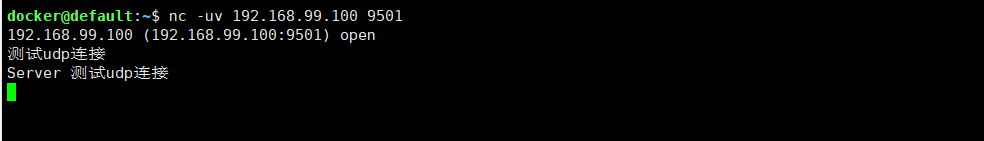

前面几篇文章讲了使用 docker+swoole 环境来测试tcp服务以及如何测试，但是当我开始学习udp服务那块的时候，发现使用原来的方式在 docker+swoole 环境下行不通啦，后来发现如果在 docker 下开通udp端口服务应该使用 "-p 虚拟机端口:docker端口/udp" 的命令，完整代码如下：
docker run -it -v /swoole:/www/code -p 9501:9501/udp twosee/swoole-coroutine bash
在linux端使用nc工具来测试连接（linux系统默认不带改工具需要自己安装 yum install -y nc ）
测试图如下
服务端：

客户端：
